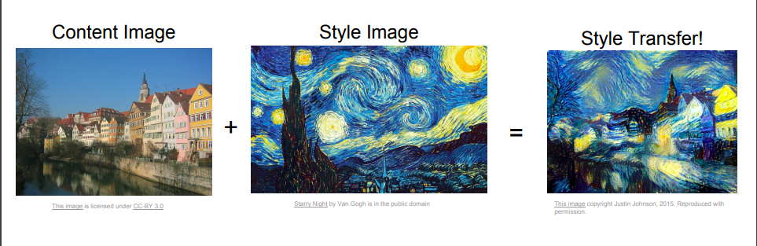
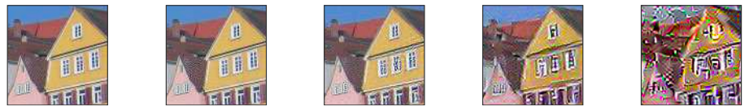
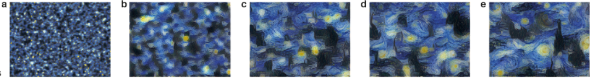

December 4, 2018 Machine Learning Deep Learning Art
Creating art using deep learning.
Ever wanted to paint like an artist, in this blog we try to achieve that using deep learning. We will use deep learning to compose the images in style of other images.
In this blog we will compose images in style of other. This is known as Neural Transfer. The technique was outlined by Leon A. Gatys in his paper titled " A Neural Algorithm of Artistic Style"
What is Style Transfer?
It is a technique where you take a 3 images a content image, style image and input image and and blend them together such that input image is transformed to look like the content image, but “painted” in the style of the style image.

As seen the content of the image on left is combined with the style of image on the right. Content refers to the shape and pattern in the image example the outlines whereas style represents the color pattern.
Style transfer is a fun and interesting technique that showcases the capabilities and internal representations of neural networks.
What is content of an image?
Convolution Neural Networks are widely popular in the field of Computer Vision. They were inspired by the biological connectivity pattern between the neurons of visual cortex in animals. To learn more about CNNs read the blog by Andrej Karpathy in the course CS231n here.
We use a pretrained VGG network as in the paper.
Convolutional Layers are able to capture the various feature ranging from low level features such as edges to high level features such as shapes. So as we go down deep into CNN layers, they learn to extract more and more complex feature from a given image, so the higher layers will discard detailed information about the image, thus have more content information as compared to the lower layers

The content reconstruction from left to right of CNN as we go deep into the layers. It can been seen that the deeper layers preserve the higher level representation of the image but loses the details of the image.
What is style of an image?
Unlike content of an image, style cannot be directly seen by the looking at feature maps of the CNN layer. But Leon found a way to represent it mathematically. It is defined by calculating the Gram matrix G of a feature map F as :
$$G_{i,j} = \sum_{k}F_{i,k}F_{j,k}$$

We combine the style from different layers as it captures both the finer texture and larger elements of the original image.
Loss function
We have a clear understanding of what is style and content of an image. Now let's define a loss function that tell us how far we are from our style transfer. Let our content image be , Style image
, and target image
.
Content Loss :
Content loss for a layer defined as the Euclidean distance between the Feature map
of our content image
and the feature map
of our target image
as
$$L_{content} = \sum_{i,j} (F^{l}_{i,j} - M_{i,j}^{l})^{2}$$
Style Loss :
Style loss for a layer is defined as the Euclidean distance between the gram matrix of Feature map
of out Style Image and Feature map
of our target image as
$$E_{l} = \sum_{i,j} (G^{l}_{i,j} - A_{i,j}^{l})^{2}$$
$$L_{style} = \sum_{l}^{L} w_{l}E_{l}$$
Where are weighting factors of the contribution of each
layer to the total loss.
We consider style loss for various layers of the network.
Total Loss :
It is defined as the weighted sum of both the style loss and content loss.
$$L_{total} = \alpha L_{content} + \beta L_{style}$$
Note :
Generally is given higher value as content loss is higher to style loss.
Optimisation Method :
Here we don't actually train a network to do classification or regression. We take advantage of backpropagation to minimize the defined loss to obtain the target image. We start with a random image or a white noise (You can also start with the same content image for convenience ). We then improve the image using back propagation.
In summary we follow the following steps:
- Pass the content and style image through the network and compute the content and style loss for respective layers.
- Compute the total loss.
- Back propagate through the network to determine the gradient of the loss function.
- Take a small step in the negative direction of gradient as we want to minimise our loss function.
- Repeat the process until the loss is below a threshold or we are happy :)
Pytorch Implementation
If you are unfamiliar with pytorch, here is a short tutorial by pytorch creator Soumith Chintala.
I have used google colab as they provide GPU accelerator. The entire code can be found here .
We can break down the code into following steps
- Read the data.
- Preprocess and visualize the data.
- Create a new model.
- Defining the loss function for the network.
- Optimize the loss.
Lets go through each of the steps
Read the data
Google collab has upload method that allows you to upload the files. Dont try to upload large files as this tends to be slow.
from google.colab import files
uploaded = files.upload()
Preprocess and visualize the data.
Preprocess
We define a function load_image to preprocess the image.
def load_image(img_path, max_size=400, shape=None):
image = Image.open(img_path).convert('RGB')
if max(image.size) > max_size:
size = max_size
else:
size = max(image.size)
if shape is not None:
size = shape
in_transform = transforms.Compose([
transforms.Resize(size),
transforms.ToTensor(),
transforms.Normalize((0.485, 0.456, 0.406),
(0.229, 0.224, 0.225))])
temp = in_transform(image)
print 'temp shape ==> ',temp.shape
image = in_transform(image)[:3,:,:].unsqueeze(0)
print 'after temp ==> ', temp[:,:,:].shape
print 'final shape ==> ',image.shape
return imageVisualize
We define im_convert function to visualize the data.
def im_convert(tensor):
image = tensor.to("cpu").clone().detach()
image = image.numpy()
image = image.squeeze()
image = image.transpose(1,2,0)
image = image * np.array((0.229, 0.224, 0.225)) + np.array((0.485, 0.456, 0.406))
image = image.clip(0,1)
return imageCreate a new model
We use a pretrained VGG 19 model, the same that is used in the paper.
vgg = models.vgg19(pretrained = True).features
for params in vgg.parameters():
params.requires_grad_(False)
vgg.cuda()Defining the loss function for the network and Optimize the loss
Content loss is calculated for a specific layer. Here we comapre conv4_2 from the VGG netowrk of the content and target images.
Style loss can be calculated for multiple layers. From the VGG network we use the following for style loss
- conv1_1
- conv2_1
- conv3_1
- conv4_1
- conv4_2
- conv5_1
Since calcualting loss is a small step, it is combined along with optimization.
for ii in range(1, steps+1):
# get the features from your target image
target_features = get_features(target, vgg)
# the content loss
content_loss = torch.mean((target_features['conv4_2'] - content_features['conv4_2'])**2)
# the style loss
# initialize the style loss to 0
style_loss = 0
# then add to it for each layer's gram matrix loss
for layer in style_weights:
# get the "target" style representation for the layer
target_feature = target_features[layer]
target_gram = gram_matrix(target_feature)
_, d, h, w = target_feature.shape
# get the "style" style representation
style_gram = style_grams[layer]
# the style loss for one layer, weighted appropriately
layer_style_loss = style_weights[layer] * torch.mean((target_gram - style_gram)**2)
# add to the style loss
style_loss += layer_style_loss / (d * h * w)
# calculate the *total* loss
total_loss = content_weight * content_loss + style_weight * style_loss
# update your target image
optimizer.zero_grad()
total_loss.backward()
optimizer.step()